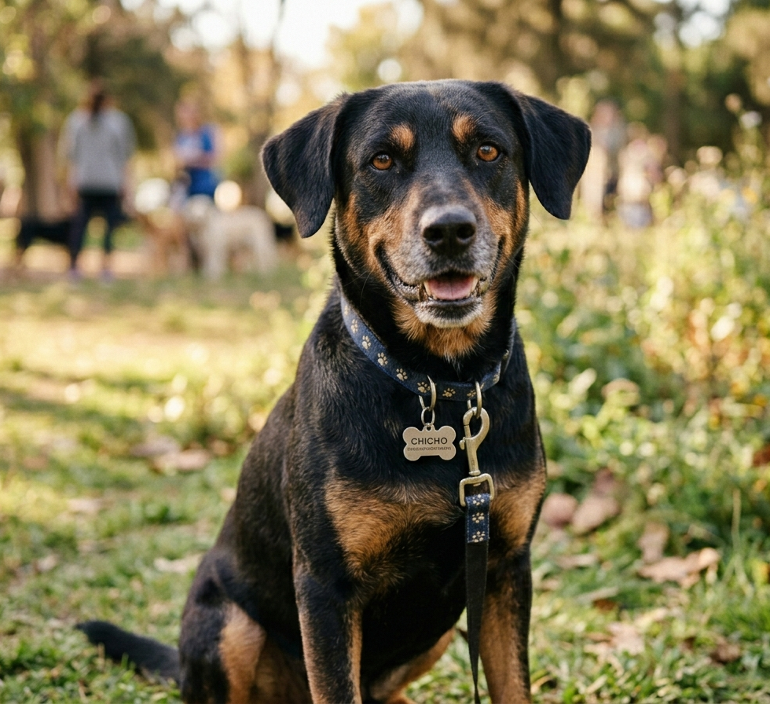
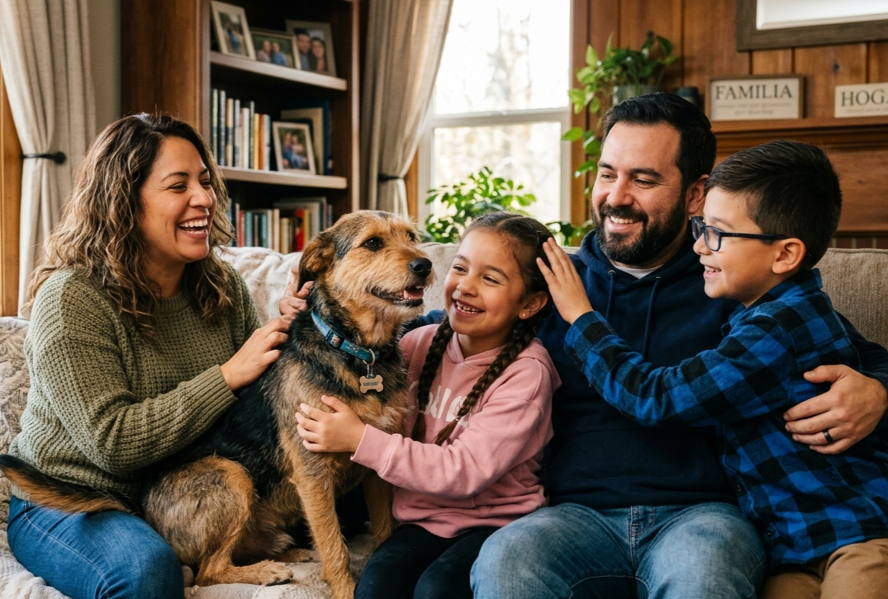
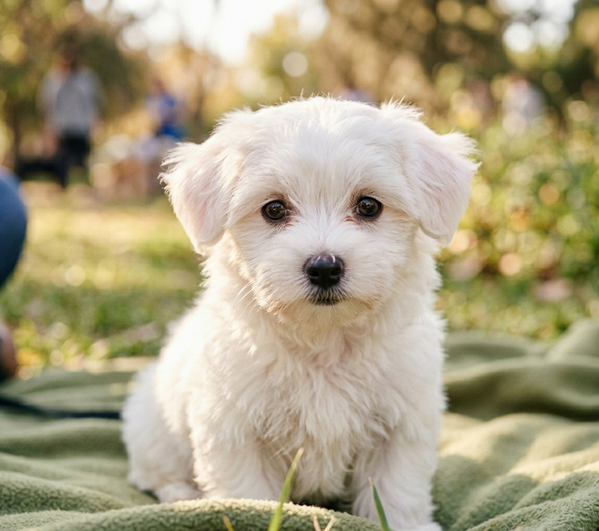

Chicho

Rescatado en la estación Hurlingham. Ya está listo para encontrar una familia.
Trabajamos día a día para rescatar, rehabilitar y encontrarle un hogar a los perros que más lo necesitan en zona oeste.


Rescatado en la estación Hurlingham. Ya está listo para encontrar una familia.

Encontrada en una plaza de Morón. En etapa de vacunación.
Existen muchas formas de ser parte de Huellas del Oeste. Podés adoptar, ser hogar de tránsito o participar de nuestras jornadas de castración.
Ver nuestros programas